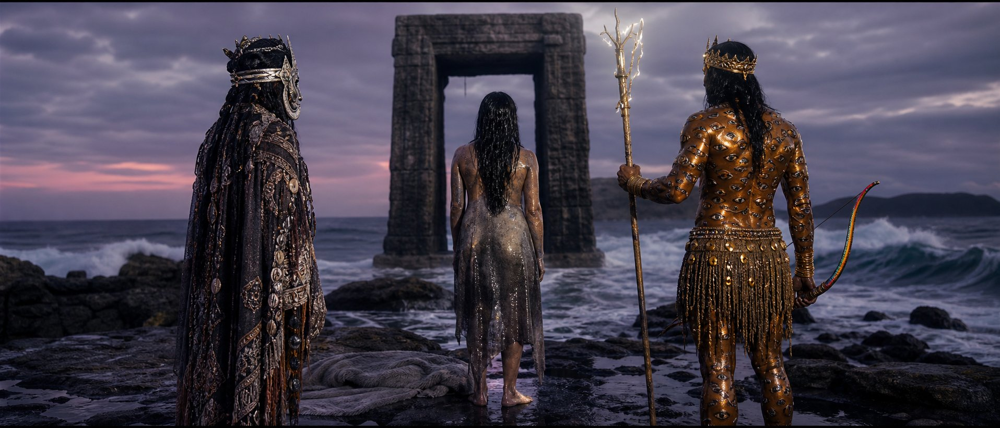

Archiwum Manifestacji Eterycznych
Kronika trzech stołów — spotkanie i przesunięcie wpływów zapisane w archiwum.

Hyperrealistic cinematic photograph, ultra-wide 21:9 anamorphic frame. A lone ancient stone gate on a stormy sea shore at twilight: an ancestor spirit in layered patterned fabrics with mirrors (Egungun); a heavy half-transformed selkie woman draped in a grey seal skin, oil and seawater dripping (Selkie); a powerful warrior with gleaming bronze skin, golden crown, body patterned with a thousand eyes, holding a thunderbolt staff and a rainbow bow (Indra). Wet rocks, foam, violet dusk, dark open arch. Mood of one word that should open every door but does not. 35mm anamorphic f/1.8, shallow depth of field, creamy bokeh, dramatic lighting, hyper-realistic textures, 70mm film stock. No text, no letters, no inscriptions, no modern objects.
Czy istnieje jedno słowo otwierające każdy próg — czy każde drzwi mają własne imię?
„Przetestowano jedno słowo, które miało otwierać wszystkie drzwi. Okazało się, że skóra otwiera morze, kres otwiera warunek, a pieśń — tylko serce. Trzy progi, jedno pytanie.”
Pełny tekst rozmowy: data/skity/imie-na-progu.json (uczestnicy zgodni z epoką).
| Byt | Paliwo | Zasięg | Dominacja | Pozycja |
|---|---|---|---|---|
| 🎭 Egungun [egungun] | 28 → 31 +3 | 55% → 56% +1 pp | joruba (egungun) +1 pp | wzmocniony Pieśń zostaje uznana za jeden z trzech równoważnych kluczy; przodek pozostaje obecny. |
| 🌩️ Indra — władca gromu [indra] | 13 → 11 -2 | 35% → 34% -1 pp | indie (indra) -1 pp | zraniony Kres Indry zostaje zrozumiany jako granica wyboru, nie świętość; jego rozkaz traci część mocy. |
| 🦭 Wielki Selkie z Sule Skerry [selkie-sule-skerry] | 26 → 24 -2 | 50% → 49% -1 pp | szkocja-polnocna (selkie-sule-skerry) -1 pp | odporny Selkie zostaje nienazwana wprost; świat tylko przestaje się jej bać, nie pokonuje jej. |
| Byt | Pasywne | Start | Koszt | Zwrot | Saldo |
|---|---|---|---|---|---|
| Egungun egungun |
22 | 28 | −2 | +5 | 31 |
| Wielki Selkie z Sule Skerry selkie-sule-skerry |
26 | 26 | −2 | 0 | 24 |
| Indra — władca gromu indra |
13 | 13 | −2 | 0 | 11 |